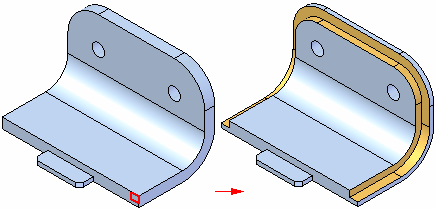

Lip command
Lip command
Creates a lip or groove on a part. You can specify whether material is added to form a lip, or removed to form a groove. The cross section shape cannot be changed. Only the dimensions that control the size of the rectangular cross section can be modified.

Selecting edges
The first step in adding a lip or groove feature is to specify which edges to add it to. You can select the edges individually, or you can select a chain of edges. The edges must be connected.
Defining the shape and direction
After selecting the edges, type the feature height and width in the command bar boxes. A dynamic representation of the feature is displayed. Move your cursor until the lip or groove is in the position you want, then click.

How do I
Construct a lip or grooveLearn more
Lip and groove featuresLook up more details
Lip command barExample: lip or groove